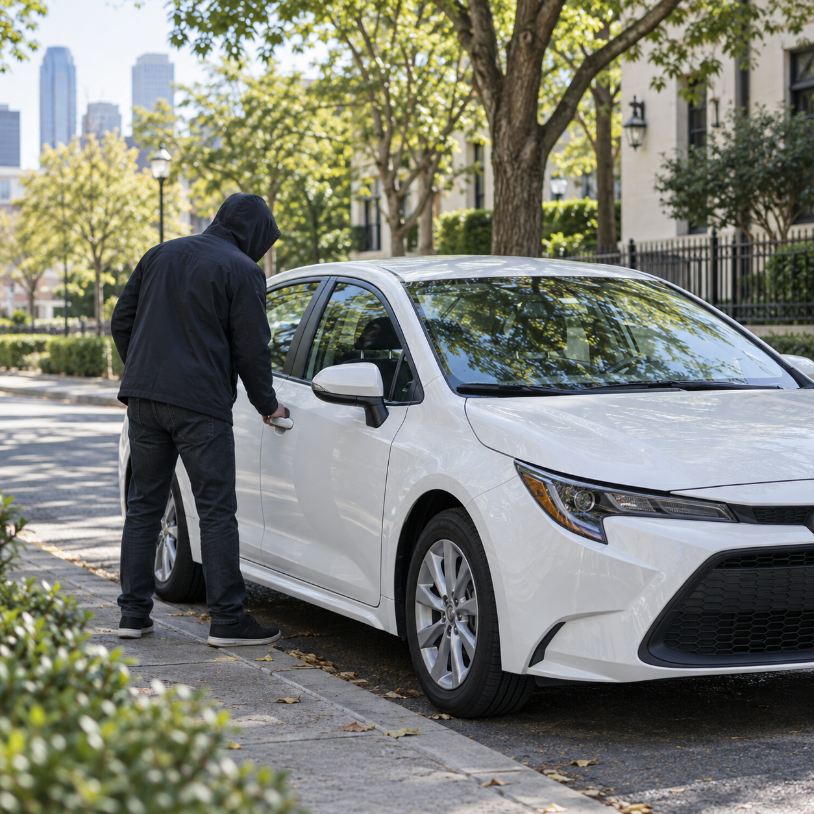
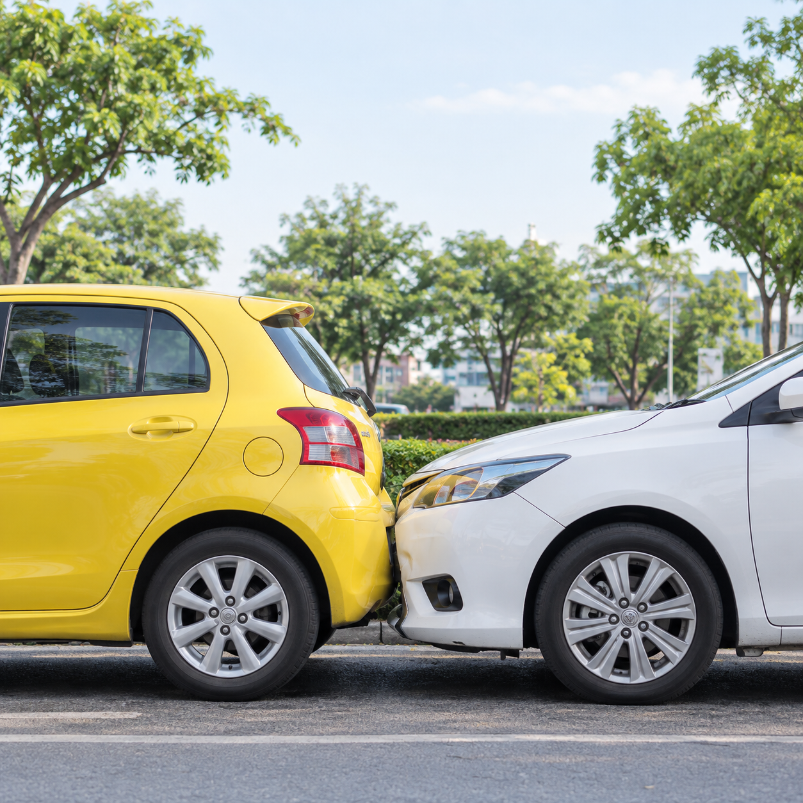

เหมาะกับใคร?
เหมาะสำหรับผู้ที่ต้องการความคุ้มครองที่จำเป็นในงบประมาณที่เหมาะสม โดยเฉพาะผู้ที่ใช้งานรถเป็นประจำ และต้องการคุ้มครองความเสี่ยงสำคัญ เช่น รถหาย ไฟไหม้ และความรับผิดต่อบุคคลภายนอก
อุ่นใจทุกเส้นทาง ด้วยความคุ้มครองที่คุ้มค่า เหมาะกับการใช้งานจริง
ประกันรถยนต์ชั้น 2 คือ ประกันภัยรถยนต์ภาคสมัครใจ ที่ให้ความคุ้มครองกรณีรถหาย ไฟไหม้ และความรับผิดต่อบุคคลภายนอก เหมาะสำหรับผู้ที่ต้องการความคุ้มครองที่จำเป็น ในเบี้ยประกันที่ประหยัดกว่า เมื่อเทียบกับประกันชั้น 1 และชั้น 2+ โดยไม่รวมความคุ้มครองค่าซ่อมรถเราเมื่อชนกับยานพาหนะทางบก
หากคุณใช้รถเป็นประจำ เดินทางในเมือง และต้องการความคุ้มครองหลักที่ครอบคลุมความเสี่ยงที่สำคัญ เช่น รถหาย ไฟไหม้ รวมถึงความเสียหายต่อชีวิต ร่างกาย และทรัพย์สินของบุคคลภายนอก ประกันรถยนต์ชั้น 2 ถือเป็นตัวเลือกที่คุ้มค่า ทั้งนี้ ความคุ้มครองทั้งหมดเป็นไปตามเงื่อนไขกรมธรรม์
เหมาะสำหรับผู้ที่ต้องการความคุ้มครองที่จำเป็นในงบประมาณที่เหมาะสม โดยเฉพาะผู้ที่ใช้งานรถเป็นประจำ และต้องการคุ้มครองความเสี่ยงสำคัญ เช่น รถหาย ไฟไหม้ และความรับผิดต่อบุคคลภายนอก
ความคุ้มครอง ข้อยกเว้น และเงื่อนไขต่าง ๆ เป็นไปตามกรมธรรม์ประกันภัยของแต่ละบริษัท ควรศึกษารายละเอียดก่อนตัดสินใจ

ให้ความคุ้มครองเมื่อรถยนต์ของคุณสูญหายจากการถูกโจรกรรม ตามเงื่อนไขของกรมธรรม์ โดยบริษัทจะพิจารณาตามเงื่อนไขและหลักฐานที่กำหนดไว้ เพื่อพิจารณาสินไหมทดแทนเป็นไปตามเงื่อนไขของแต่ละบริษัท
จอดรถไว้แล้วถูกขโมย หากเข้าเงื่อนไขตามกรมธรรม์ อาจได้รับความคุ้มครองตามมูลค่าที่ทำประกันไว้

ให้ความคุ้มครองความเสียหายของรถยนต์จากเหตุไฟไหม้ รวมถึงเหตุระเบิดที่มีสาเหตุจากไฟ ซึ่งเกิดขึ้นโดยไม่ตั้งใจ ทั้งนี้ ความคุ้มครองเป็นไปตามเงื่อนไขกรมธรรม์ของแต่ละบริษัท
เกิดเหตุไฟไหม้ที่ลานจอดรถ อาจได้รับความคุ้มครองตามความเสียหายที่เกิดขึ้น ตามเงื่อนไขกรมธรรม์

ให้ความคุ้มครองความเสียหายต่อชีวิต ร่างกาย และทรัพย์สินของบุคคลภายนอกจากอุบัติเหตุที่คุณเป็นฝ่ายผิด ครอบคลุมทั้งค่ารักษาพยาบาล ค่าสินไหมทดแทน และค่าซ่อมทรัพย์สินของบุคคลภายนอก ตามวงเงินที่กำหนดในกรมธรรม์
ขับรถชนรถคันอื่น ค่าซ่อมของคู่กรณีอาจได้รับความคุ้มครอง หากคุณเป็นฝ่ายผิด ตามเงื่อนไขกรมธรรม์

อาจเพิ่มความคุ้มครองอุบัติเหตุส่วนบุคคลสำหรับผู้ขับขี่และผู้โดยสาร ค่ารักษาพยาบาล และค่าประกันตัวผู้ขับขี่ในคดีอาญา ได้ตามเอกสารแนบท้ายกรมธรรม์ ทั้งนี้ รายละเอียด ความคุ้มครอง และวงเงินเป็นไปตามที่ระบุในกรมธรรม์
ผู้ขับขี่และผู้โดยสารได้รับบาดเจ็บ อาจได้รับความคุ้มครองค่ารักษาพยาบาล ตามวงเงินในเอกสารแนบท้าย (ถ้ามี)

ประกันรถยนต์ชั้น 2 ไม่คุ้มครองค่าซ่อมรถของเรา เมื่อชนกับยานพาหนะทางบก แม้จะมีรถคันอื่นมาเกี่ยวข้องก็ตาม โดยจะคุ้มครองเฉพาะความเสียหายของบุคคลภายนอกเท่านั้น เช่น ค่าซ่อมรถคู่กรณี หรือค่ารักษาพยาบาลของคู่กรณี หากเราเป็นฝ่ายผิด
หากต้องการความคุ้มครองค่าซ่อมรถของเราเมื่อชนกับยานพาหนะทางบก แนะนำให้พิจารณา ประกันรถยนต์ชั้น 2+ ซึ่งให้ความคุ้มครองในส่วนนี้เพิ่มเติม ตามเงื่อนไขกรมธรรม์
บริษัทจะชดใช้เมื่อรถหายหรือเสียหายจากไฟไหม้ ตามมูลค่าที่เอาประกันไว้ หักด้วยค่าเสียหายส่วนแรก ถ้ามี
อาจมีค่าเสียหายส่วนแรกในบางกรณี เช่น กรณีไฟไหม้ ขึ้นอยู่กับเงื่อนไขของแต่ละบริษัท
สามารถเลือกซื้อเอกสารแนบท้ายเพิ่มความคุ้มครองอุบัติเหตุส่วนบุคคล ค่ารักษาพยาบาล และค่าประกันตัวผู้ขับขี่ได้
ควรอ่านรายละเอียด ความคุ้มครอง ข้อยกเว้น และเงื่อนไขในกรมธรรม์อย่างละเอียด ก่อนทำประกันภัยทุกครั้ง
ประกันรถยนต์ชั้น 2 คุ้มครองรถหาย ไฟไหม้ และความรับผิดต่อบุคคลภายนอก แต่ไม่คุ้มครองค่าซ่อมรถของเราเมื่อชนกับยานพาหนะทางบก ส่วนประกันรถยนต์ชั้น 2+ จะให้ความคุ้มครองเพิ่มเติมในส่วนค่าซ่อมรถของเราเมื่อชนกับยานพาหนะทางบก ตามเงื่อนไขกรมธรรม์
ประกันรถยนต์ชั้น 2 ไม่คุ้มครองค่าซ่อมรถของเรา เมื่อชนกับยานพาหนะทางบก แต่ยังคงคุ้มครองเฉพาะความเสียหายของบุคคลภายนอก เช่น ค่าซ่อมรถคู่กรณี หากเราเป็นฝ่ายผิด
กรณีรถหาย บริษัทจะพิจารณาความคุ้มครองตามเงื่อนไขกรมธรรม์ เช่น การแจ้งความกับตำรวจภายในเวลาที่กำหนด หลักฐานการครอบครองรถ และเอกสารอื่น ๆ ที่เกี่ยวข้อง รวมถึงมูลค่ารถที่ทำประกันไว้และค่าเสียหายส่วนแรก (ถ้ามี) ทั้งนี้ การพิจารณาสินไหมทดแทนเป็นไปตามเงื่อนไขของแต่ละบริษัท

บอกเล่าความต้องการของคุณ
เราช่วยแนะนำแผนที่เหมาะสม ให้คุณตัดสินใจได้อย่างมั่นใจ
เรื่องประกันรถ
ให้เราดูแล